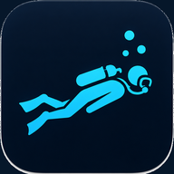

יומן הצלילה של תמיר
התקן את הקיצור מהעמוד הזה כדי לשמור את האייקון המותאם.
פתח את יומן הצלילהאחרי ההתקנה, פתח את האפליקציה מהאייקון במסך הבית ולחץ על הכפתור כדי להיכנס ליומן.

התקן את הקיצור מהעמוד הזה כדי לשמור את האייקון המותאם.
פתח את יומן הצלילה